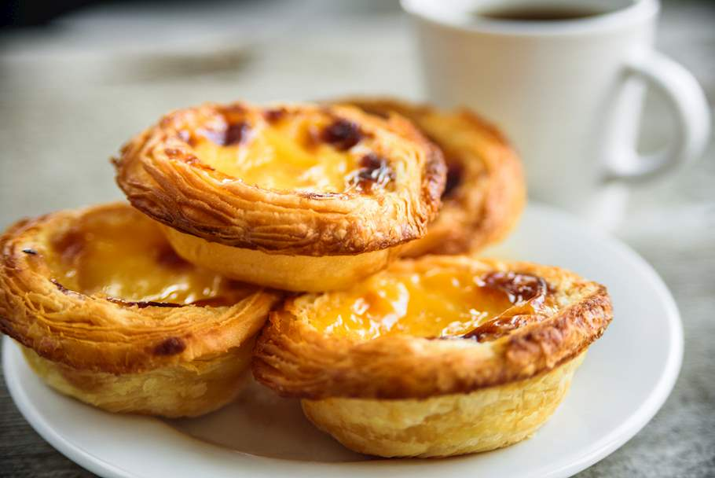

portuguese custard tarts.

Description
Pasteis de nata or Portuguese custard tarts, with their signature flaky crust and sweet custard filling are world-famous, and incredibly delicious.
This recipe shows you how to make them from scratch, using basic ingredients.
Yes, it requires numerous steps and a certain amount of finesse, but the results are so worth it.
Ingredients
Dough
- 1 cup all-purpose flour
- 1/4 teaspoon kosher salt
- 1/3 cup cold water
- 1 stick high-quality unsalted butter, fully softened, divided
Sugar Syrup
- 3/4 cup white sugar
- 1/4 cup water
- 1 tablespoon water
- 1 cinnamon stick (optional)
- 1 lemon, zested in large strips (optional)
Custard Base
- 1/3 cup all-purpose flour
- 1/4 teaspoon kosher salt
- 1 1/2 cups milk
- 6 large egg yolks
- 1 teaspoon vanilla extract (optional)
Steps
- Combine flour, salt, and cold water in a bowl. Mix with a wooden spoon until dough just comes together and pulls away from the sides of the bowl. Dough should be sticky, adjust with more flour or water.
- Transfer dough onto a well-floured surface. Dust a little more flour over the top. Knead for 1 to 2 minutes to form a round. Cover and let rest for 15 to 20 minutes.
- Roll dough into a square about 1/8-inch-thick, dusting with flour as necessary; dough should still be sticky.
- Spread 1/3 of the butter over 2/3 of the square using a silicone spatula, leaving a 1/2-inch border. Flip the unbuttered side over the middle of the square and fold the opposite end over it like a letter. Straighten the edges as needed.
- Turn dough with a bench scraper to unstick it from the counter; dust with flour. Flip and sprinkle more flour on top. Roll dough into a 1/8-inch-thick rectangle, carefully stretching edges as needed. Spread another 1/3 of the butter over 2/3 of the dough. Fold into thirds. Transfer onto a lined baking sheet and freeze until butter is slightly chilled, about 10 minutes.
- Sprinkle dough with flour and roll into a square a little over 1/8-inch-thick. Spread remaining butter over the dough, leaving a 1- to 1 1/2-inch border on the top edge. Dip your finger in water and lightly moisten the unbuttered edge. Roll dough into a log starting from the bottom edge. Dust with more flour and polish the ends as needed. Seal with plastic wrap and refrigerate at least 2 hours, preferably overnight.
- Combine sugar, 1/4 cup plus 1 tablespoon water, cinnamon, and lemon zest in a pot. Boil over medium heat, without stirring, until syrup reaches 210 to 215 degrees F (100 degrees C). Remove from heat.
- Preheat the oven to 550 degrees F (288 degrees C). Grease a 12-cup muffin tin.
- Whisk flour, salt, and cold milk together very thoroughly in a cold pot. Cook over medium heat, whisking constantly, until milk thickens, about 5 minutes. Remove from heat and let cool for at least 10 minutes.
- Whisk egg yolks into the cooled milk. Add sugar syrup and vanilla extract. Mix until combined. Strain custard into a glass measuring cup.
- Unwrap the dough and trim any uneven bits on the ends. Score log into 12 even pieces using a knife; cut through.
- Place a piece of dough in each muffin cup. Dip your thumb lightly in some cold water. Press your thumb into the center of the swirl; push dough against the bottom and up the sides of the cup until it reaches least 1/8 inch past the top. Fill each cup 3/4 of the way with custard.
- Bake in the preheated oven until the pastry is browned and bubbly, and the tops start to blister and caramelize, about 12 minutes. Cool tarts briefly and serve warm.
Last step...enjoy it!